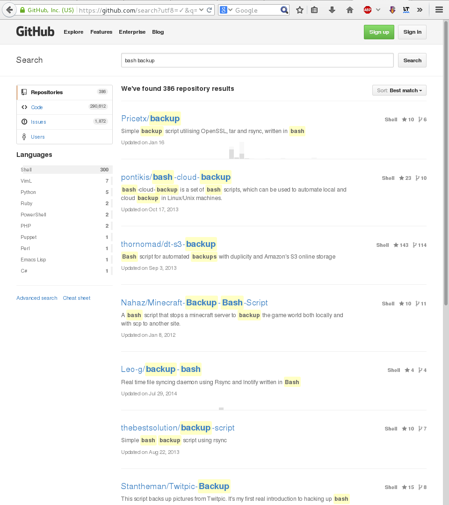
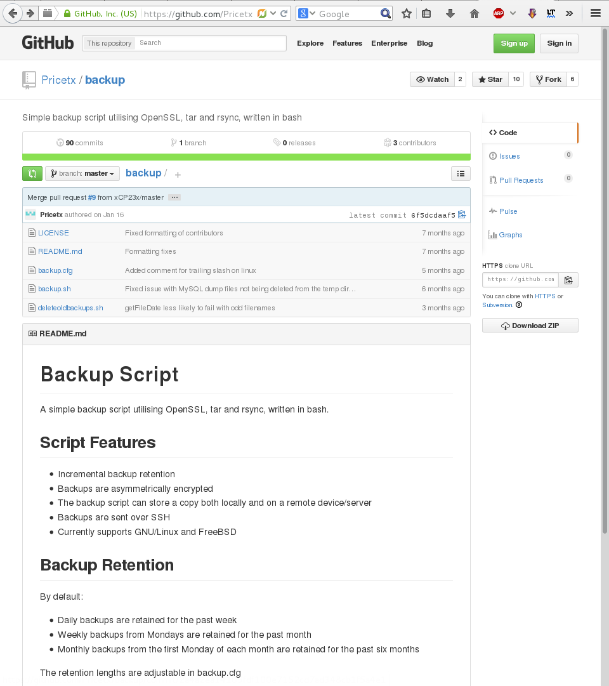

git clone¶
We hebben hiervoor onze eigen repository gemaakt. Je kan echter ook bestaande repositories op andere machines ‘clonen’ naar je eigen computer.
Repositories kunnen op verschillende plaatsen staan:
- Op je eigen machine (dit hebben we in de vorige voorbeelden gedaan).
- Gehost op GitHub <http://www.github.com> (deze is gratis voor Open Source projecten)
- Een ‘GitHub alternatief <http://toppersworld.com/top-10-free-github-alternatives-for-private-repositories/>`.
- Een eigen git server, bijvoorbeeld via Gitolite <http://gitolite.com>.
We gaan nu een Open Source projectje binnenhalen (‘clonen’) via GitHub.
We zoeken iets met de standaard Linux scripttaal Bash, naar iets wat kan backuppen.
In de repositories gebruik de zoektermen ‘bash backup’
De eerste hit ziet er wel interessant uit, dus we klikken op ‘Pricetx/backup’:
Rechts zie je bij ‘HTTPS clone URL’ de URL staan die je kan gebruiken om te ‘clonen’. Kopieer deze tekst want deze gaan we hierna gebruiken. Heb je eenmaal een GitHub account (en heb je een ‘ssh-key’ aangemaakt en geuploaded), dan kan het het ook copieren via SSH, zelf je repositories daar neerzetten, clonen en wijzigingen ‘pushen’
Eerst kijken we welke repositories we hebben (we zien alleen de repo die we zelf gemaakt hebben).
dion@localhost ~]$ cd ~
[dion@localhost ~]$ ls -l
total 0
drwxrwxr-x. 3 dion dion 35 Mar 13 10:43 repo_een
We gaan nu ons uit GitHub gezochte repository clonen:
[dion@localhost ~]$ git clone https://github.com/Pricetx/backup.git
Cloning into 'backup'...
remote: Counting objects: 251, done.
remote: Total 251 (delta 0), reused 0 (delta 0), pack-reused 251
Receiving objects: 100% (251/251), 39.67 KiB | 0 bytes/s, done.
Resolving deltas: 100% (143/143), done.
We zien nu dat een ‘backup’ directory is aangemaakt.
[dion@localhost ~]$ ls -l
total 4
drwxrwxr-x. 3 dion dion 4096 Mar 16 06:47 backup
drwxrwxr-x. 3 dion dion 35 Mar 13 10:43 repo_een
We zien dat de directory gevuld is met bash scripts (*.sh) en een ‘.git’ directory:
[dion@localhost ~]$ cd backup
[dion@localhost backup]$ ls -la
total 40
drwxrwxr-x. 3 dion dion 4096 Mar 16 06:47 .
drwx------. 5 dion dion 4096 Mar 16 06:47 ..
-rw-rw-r--. 1 dion dion 2501 Mar 16 06:47 backup.cfg
-rw-rw-r--. 1 dion dion 4448 Mar 16 06:47 backup.sh
-rw-rw-r--. 1 dion dion 4267 Mar 16 06:47 deleteoldbackups.sh
drwxrwxr-x. 8 dion dion 4096 Mar 16 06:47 .git
-rw-rw-r--. 1 dion dion 1379 Mar 16 06:47 LICENSE
-rw-rw-r--. 1 dion dion 807 Mar 16 06:47 README.md
En nu kunnen we kijken met ‘git status’ of dit wel een echte repo is:
dion@localhost backup]$ git status
# On branch master
nothing to commit, working directory clean
We zien zelfs dat de hele history meegekomen is:
dion@localhost backup]$ git log
commit 6f5dcdaaf57393e1012f8548bde9dc2c8c678a04
Merge: abfee4b 2a4a2ea
Author: Jonathan Price <pricetx@hotmail.com>
Date: Fri Jan 16 18:59:52 2015 +0000
Merge pull request #9 from xCP23x/master
Various minor improvements
...
t 7931dd5fb8171e02cf5b2bd92876ceb76eef9752
Author: Jonathan Price <pricetx@hotmail.com>
Date: Tue Aug 12 16:57:10 2014 +0100
Initial commit
(END)